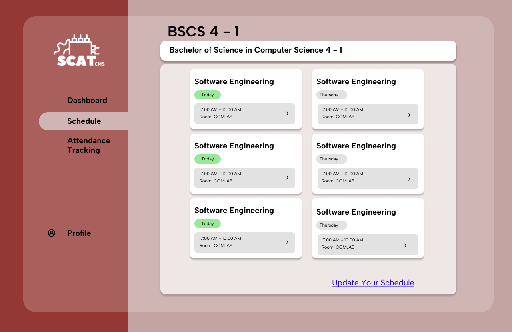
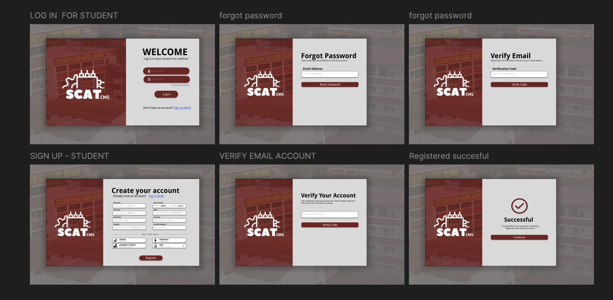

Web Development
I build responsive websites and interface layouts using HTML, CSS, JavaScript, and Bootstrap with clean, readable structure.
Entry-Level Web Developer specializing in responsive web development and clean user interfaces. I develop portfolio websites, academic systems, and business web applications using HTML, CSS, JavaScript, PHP, and MySQL.
I am a Bachelor of Science in Computer Science graduate with five years of experience in Social Media Management and Graphic Design. Throughout my career, I have created engaging product posters, banners, mockups, social media content, and promotional videos for businesses, brands, and content creators. I also have experience managing Facebook Pages, Facebook Groups, Instagram accounts, and Meta Business Suite to help businesses strengthen their online presence.
My technical background includes front-end web development using HTML, CSS, JavaScript, as well as back-end development with PHP, MySQL, and SQL. I also have knowledge of UI/UX design using Figma and Canva, allowing me to create intuitive and user-friendly digital experiences.
I am currently developing a Smart Card Attendance System for my thesis and I am looking for opportunities where I can grow as an entry-level developer.
I build responsive websites and interface layouts using HTML, CSS, JavaScript, and Bootstrap with clean, readable structure.
I create database-driven pages and academic system features with PHP, MySQL, SQL, and practical back-end integration.
I design layouts and visual structures in Figma and Canva to improve clarity, accessibility, and user experience.
I create modern personal portfolio pages for students, freelancers, and creatives who want a clean online presence.
I can develop simple promotional websites that highlight services, contact details, and core business information.
I help transform thesis and school system ideas into usable web-based interfaces with organized user flow.

Web-based attendance tracking thesis project with RFID integration and separate dashboard views for professors and administrators.

Course-related web pages and interfaces developed using modern front-end practices, responsive layout structure, and clean navigation.
Freelance work involving digital marketing visuals, page management, and optimized content posting with basic SEO support.
Whether you want to hire me for an entry-level role or collaborate on a website project, feel free to reach out using the details below.